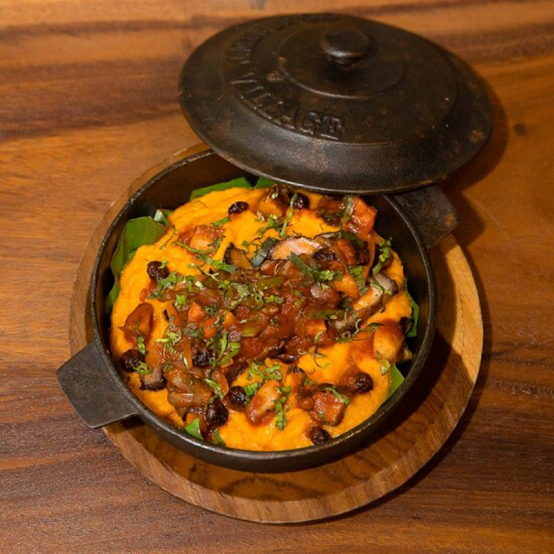

Pot Tamale
- 2 cups cornflour
- 5 cups vegetable stock
- 6 tablespoons vegetable oil rubbed with achiote
- to taste Salt and pepper
- 250gr sliced mushrooms
- 1 large white onion in small cubes
- 5 finely chopped sweet peppers
- 1 red pepper, finely julienned
- 1 green pepper in fine julienne strips
- 6 coriander leaves
- 5 cloves garlic, finely chopped
- 4 tablespoons soy sauce
- 1/2 cup sliced green olives
- 1 cup white wine
- 3 tablespoons achiote oil
- 2 tablespoons capers, chopped
- 1 cup vegetable stock
- Olive oil
- Salt and freshly ground black pepper
Ingredients
In Panamanian cuisine, tamal de olla, which is Spanish for "tamale of the pot/pan," is best described as a Panamanian-style tamale that fills the baking pan in which it is cooked, and is not wrapped in a banana or plantain leaf.
Dough
Stuffing
Steps
- In a saucepan over high heat, pour in the oil, add the garlic, onion and mushrooms. Cook for 5 minutes or until the onions are brown.
- Lower the heat to medium and add the rest of the stuffing ingredients and water. Cover the pan and cook for 10 minutes.
- Turn off the heat and let the mixture stand.
- In a new bowl, add the cornflour, stirring constantly. If necessary, add a little more water.
- In an earthenware or porcelain bowl, place a bed of corn dough, cover with the chicken mixture and finally cover with the rest of the dough.
